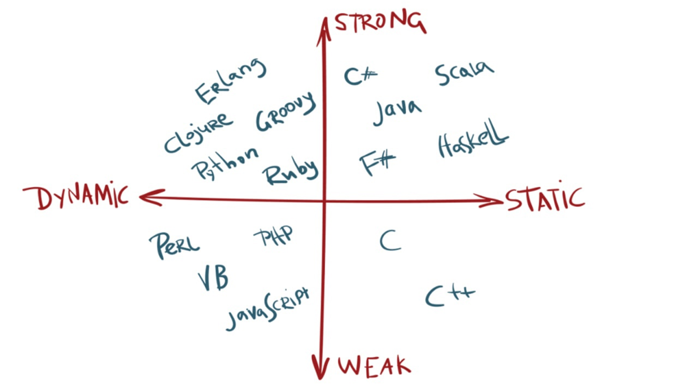
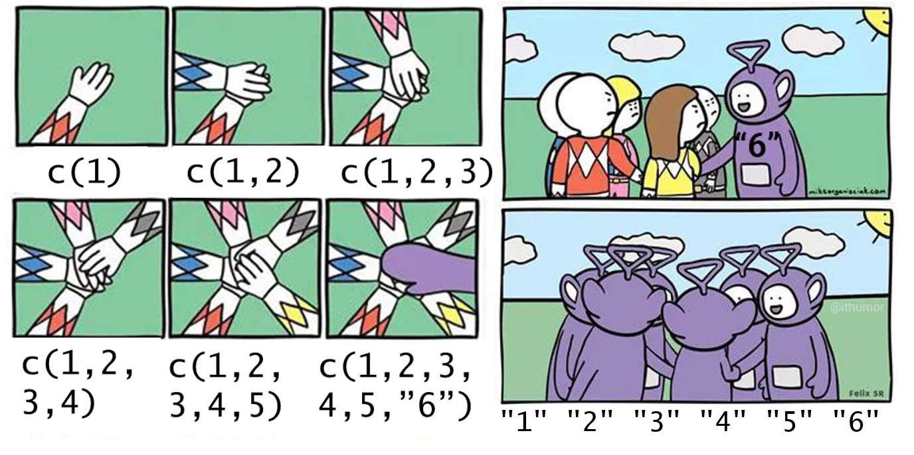
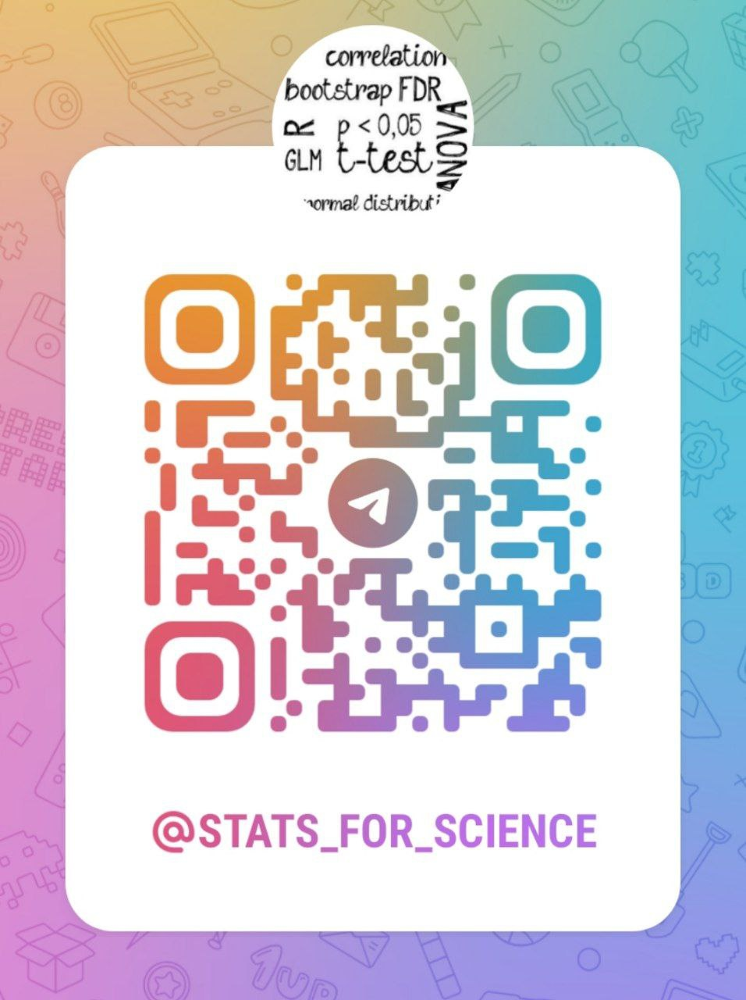

[1] 42R и статистика в селекции: лекция 1
Елена Убогоева
Информация о курсе
12 лекций в zoom по одной лекции в неделю: по средам в ~16.30 МСК.
Домашние задания (по желанию).
Будет запись каждой лекции, после занятия выложена на диск.
Структура курса:
5 лекций по работе в R
Статистические методы
Почему важно изучать R в контексте статистики и селекции?
- Большинство статистических расчетов реализовано в R, следовательно можно воспользоваться готовым скриптом для своей задачи (с нужными преобразованиями).
- R предоставляет обширный функционал для быстрой и удобной работы с табличными данными (а наши данные являются табличными).
- Воспроизводимость результатов, что реализуется как выкладыванием кода, так и с помощью публикации результатов в системах
rmarkdownи Quarto. - R – бесплатный и с открытым исходным кодом.
Установка R и RStudio и начало работы
Рекомендуемая литература
Большая часть литературы по R на английском, однако начинают появляться в том числе материалы на русском.
R4DataScience - книга для старта изучения R (Hadley Wickham).
Advanced R - для продвинутых пользователей, которые хотят разобраться больше в устройстве языка (Hadley Wickham).
Анализ данных и статистика в R (автор Иван Поздняков).
Введение в язык программирования R (автор Филипп Управителев)

План лекции
Особенности архитектуры языка R.
Переменные.
Векторы:
Типы векторов
Индексация векторов
Неявное и явное приведение типов
Логические операторы, булева алгебра
Работа с пропущенными значениями
История языка R
R - язык программирования для статистической обработки данных и визуализации результатов (Википедия).
На самом деле R является языком широкого использования, например, с его помощью можно делать сайты, интерактивные приложения (shiny), презентации, писать книги и научные статьи.
R является наследником языка S, который был создан в отделе статистики AT&T в её исследовательском подразделении Bell Labs в 1976 году.
R был создан в 1991 в департаменте статистики Университета Окленда, Новая Зеландия. Разработчиками R поддерживается CRAN - репозиторий R-пакетов.
Для анализа данных есть набор пакетов
tidyverse, главный разработчик Hadley Wickham.Для работы с биологическими данными есть репозиторий Bioconductor.
Особенности архитектуры языка
R - высокоуровневый интерпретируемый мультипарадигменный язык программирования.
Парадигмы программирования:
императивное (процедурное)
функциональное
объект-ориентированное
Типизация:
динамическая - не нужно заранее определять тип переменной и тип может меняться в процессе скрипта
нестрогая - происходит неявное приведение типов
Больше про историю языка можно посмотреть здесь.
R как калькулятор
Любая книга по базовому R начинается с этого раздела, так что не будем нарушать традицию:
R как калькулятор
Функции для арифметических операторов: sqrt(), log()
Можно задать основание логарифма. Как это сделать, можно узнать, вызвав справку функции ?log.
[1] 3[1] 3[1] 3Для вызова справки можно использовать ?<название функции>, help("<название функции>") или нажать F1 на функции
Переменные
Поскольку R является в первую очередь императивным языком программирования, то переменные и оператор присваивания занимают центральную роль. В качестве оператора присваивания используется <-.
Можно набрать в RStudio, используя комбинацию клавиш Alt - (альт минус) или Option - на Mac.
Равно = тоже будет работать, но не рекомендуется к использованию.
Попробуем создать переменные:
Почему ничего не появилось в консоли в качестве аутпута?
Равно используется для подачи аргументов в функции: log(x = 8, base = 2)
Переменные
При создании переменной результат сохраняется и не выводится в консоль, если нам нужно узнать значение переменной, то можно использовать print(x) или просто набрать x в консоли.
Также можно посмотреть на переменные во вкладке environment в правом верхнем углу RStudio
Переменные
С точки зрения компьютера в нем создается объект 10, с которым связывается название переменной x. Переменные могут содержать все что угодно: числа, строки, датафреймы.
При создании переменных есть определенные правила:
В названии можно использовать латиницу (строчные и заглавные буквы), нижнее подчеркивание (
_), точки, цифры;нельзя использовать пробелы в названиях переменных;
нельзя использовать зарезервированные слова, например,
TRUE,FALSE,if,function, с полным списком можно ознакомиться, вызвав?Reserved.
В R для разделения длинных имен рекомендуется использовать нижнее подчеркивание, например: data_processed. Главное - последовательность в стиле написания кода.
Подробнее про рекомендуемый стиль написания кода можно почитать здесь
Логические операторы

Логические операторы: проверка на неравенство
Результаты выполнения логических операций мы можем сохранять в переменные для дальнейшего использования.
Логические операторы: сравнение и отрицание
Можем сравнивать числа, используя знаки >, <, >=, <=.
Восклицательный знак означает логическое НЕ (отрицание):
Логическое И и логическое ИЛИ
Логическое И: выдаст TRUE, если все значения TRUE
Логическое ИЛИ: будет TRUE, если хотя бы одно из значений TRUE
Векторы
Векторы являются ключевым типом данных в R, на основе которых строятся более сложные структуры данных. Скаляры (одиночные значения) являются векторами длиной 1.
Вектор - набор данных одного типа. В R существует 4 основных часто использующихся типов векторов.
Основные типы векторов:
Логические, logical:
TRUE,FALSEЦелочисленные, integer:
1L,190LДробные, double или числа с плавающей точкой:
-1.5,0.05,5. Еще естьInf,-Inf,NaN.Строковые, character:
'Hello world','character'
Целочисленные вектора сопровождаются знаком L и не содержат дробной части
Создание векторов
с помощью функции
c(). Например:x <- c(5, 4, 5, 3, 2).
gene_names <- c('ARR1', 'ARF19', 'WOX5')с помощью двоеточия
:, чтобы создавать набор чисел по порядку с шагом 1. Например:с помощью
seq(), если нужна последовательность чисел, с шагом, отличным от единицыс помощью
rep()для создания повторяющихся элементов:
Индексация векторов
В R индексация начинается с единицы (по-человечески). Для индексации используются квадратные скобки:
Для извлечения нескольких элементов вектора в качестве индекса используется тоже вектор:
Индексация векторов
Можно с помощью индексации заменять элементы:
Tip
Круглые скобки используются при работе с функциями, квадратные при индексации
Индексация векторов с помощью условия
Кроме индексации по номеру, можно извлечь элементы вектора, соответствующие какому-либо условию.
Например, извлечь все значения, которые больше или равны нулю вектора x
Сначала используем условие:
Получаем логический вектор, который можно использовать как индекс для отбора нужных элементов x
Индексация векторов: проверка на четность
Допустим, у нас есть вектор
vect_for_evenЗадача вывести все четные элементы, используя знания об индексации векторов. Оператор остатка от деления:
%%Это решается без циклов. Сначала делаем проверку условия, что остаток от деления на два каждого элемента равен нулю:
Далее используем полученный логический вектор в качестве индекса к исходному:
Динамическая нестрогая типизация
Динамическая: не нужно при создании вектора указывать его тип, как бывает в языках со статичной типизацией. Также тип вектора может поменяться в процессе кода:
Нестрогая (слабая, weak): происходит неявное приведение типов

R на этой картинке должен быть в левом нижнем углу
Неявное приведение типов
Векторы в R по определению могут быть только одного типа. Что произойдет, если мы попытаемся объединить в одном векторе элементы разных типов?
Например так:
Будет ли ошибка или каким-то образом произойдет объединение?
Ответ:
Произошло неявное приведение типов (implicit coercion): логический тип превратился в числа,
TRUE -> 1,FALSE -> 0
Порядок неявного приведения типов
Логика порядка приведения типов: от менее общего к более общему
logical -> integer -> numeric -> character
Часто происходит превращение числового вектора в строку.
Полезный пример неявного приведения типов: подсчет суммы истинных значений логического вектора
Неявное приведение типов: иллюстрация
Проверка типа вектора
Чтобы проверить тип вектора, можно использовать функцию class():
Также можно использовать функции проверки вектора на нужный тип: is.numeric(), is.character(), is.logical()
Чтобы ознакомиться со списком функций is.* можно набрать is. в консоли и нажать Tab
Явное приведение типов
Чтобы превратить вектор в нужный тип можно использовать функции: as.numeric(), as.character(), as.logical()
Создадим вектор, который содержит строки и превратим в numeric обратно
Пропущенные значения
При работе с данными могут быть пропущенные значения в силу разных причин. В R обозначается NA - Not Available
Проблема пропущенных значений: неопределенность “заражает”
Аргумент na.rm - способ вычислить среднее (сумму и тп) без учета пропущенных значений
Как находить пропущенные значения?
Давайте попробуем сравнить значения нашего вектора с
NAОй
Почему в сравненииNA == NAполучаетсяNA?Пропущенное значение - это отсутствие информации о чем-либо, следовательно, мы не можем сделать вывод, является ли отсутствие информации равным другому отсутствию.
Для выявления пропущенных значений используем функцию is.na()
Теперь с помощью логического отрицания (NOT, !) этого вектора можно отобрать не-пропущенные элементы:
[1] TRUE TRUE TRUE TRUE TRUE TRUE TRUE TRUE TRUE TRUE FALSE [1] 1 2 3 4 5 6 7 8 9 10После этого можно делать интересующие операции над этим вектором, уже не беспокоясь о пропущенных значениях.
Чек-лист, что нужно знать после лекции
Что такое переменные, как их создавать
Как проверять переменные на равенство/неравенство, больше/меньше
Правила индексации векторов
Неявное приведение типов
Работа с пропущенными значениями
Вопросы?
Подписывайтесь на телеграм-канал о статистике:
